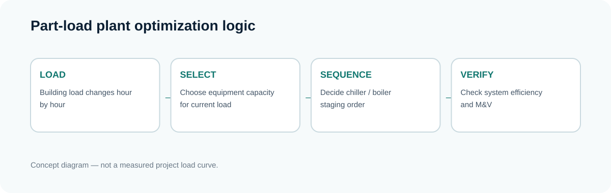
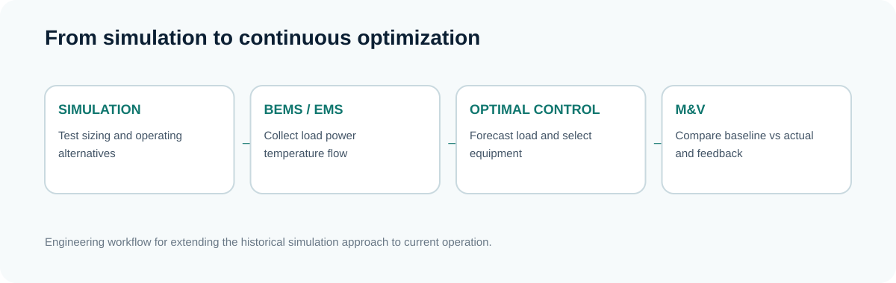

난방·급탕부하에 대응하는 기존 보일러 구성
CASE 46 · PLANT · PART-LOAD · SEQUENCING · EMS
부분부하 대응을 위한 냉동기·보일러 용량분할 및 운전최적화 Simulation
큰 설비를 계속 저부하로 운전할 것인가, 부하에 맞는 설비를 선택적으로 운전할 것인가?
01 · PROBLEM
대용량 설비를 저부하에서도 계속 운전해야 하는가?
냉동기와 보일러는 설계 최대부하에 대응하도록 선정되지만 실제 건물은 연중 Peak로 운전되지 않습니다. 봄·가을, 주말, 야간과 부분사용 시간에는 낮은 부하에 맞는 설비조합과 가동대수 전략이 중요합니다.
02 · EXISTING PLANT
기존 열원설비 구성
냉방부하에 대응하는 기존 냉동기 구성
월별 냉난방에너지·1차에너지와 개선대안을 검토
03 · PART-LOAD
부하는 시간에 따라 계속 변한다
| 부하영역 | 운전 특성 | 최적화 관점 |
|---|---|---|
| Peak Load | 최대부하 대응 | 대용량 설비 필요 |
| Normal Load | 중간부하 | 일부 설비 선택운전 |
| Low Load | 부분부하 | 소용량·고효율 조합 검토 |
| Holiday / Night | 매우 낮은 부하 | 최소 필요용량과 운전시간 최적화 |
정격용량 대비 실제 부하의 비율을 Part Load Ratio(PLR) 관점에서 보면, 동일한 부하라도 어떤 장비를 몇 대 켜느냐에 따라 각 장비가 경험하는 PLR이 달라집니다. 따라서 “정격 COP가 높은 장비”와 “현재 시스템에서 가장 효율적인 조합”은 항상 같은 의미가 아닙니다.
04 · ALTERNATIVE
저부하 대응용 소용량 설비 추가 시나리오
| 설비 | 기존 | 개선 Simulation |
|---|---|---|
| Boiler | 3 ton × 3 + 8 ton × 2 | 하절기 대응 1.5 ton × 1 추가 |
| Chiller | 500 RT × 2 | 초기부하·휴일 대응 300 RT × 1 추가 |
핵심은 설비를 단순 추가하는 것이 아니라 현재 부하에 맞는 용량의 설비를 선택하고 가동대수를 조정하여 Part-load 운전을 개선하는 것입니다.
ENGINEERING NOTE
Equipment Efficiency ≠ System Efficiency
냉동기 COP만 비교해서는 Plant 전체 효율을 판단하기 어렵습니다. 냉수펌프, 냉각수펌프, 냉각탑 팬, 공급온도와 유량, 가동대수까지 함께 변하기 때문입니다. 따라서 최적화의 목적함수는 개별 장비 효율이 아니라 필요 부하를 만족시키는 전체 시스템 에너지가 되어야 합니다.
05 · SEQUENCING
용량분할에서 Optimal Sequencing으로
현재 냉난방부하를 판단합니다.
현재 부하에 적합한 용량의 설비를 선택합니다.
냉동기·보일러 가동대수와 우선순위를 결정합니다.
정격효율이 아니라 실제 부하영역의 시스템 효율을 평가합니다.

실제 제어로 구현하려면 최소 운전시간, 최소 정지시간, 장비 기동횟수, 공급온도 유지, 예비설비 확보 같은 제약조건도 함께 고려해야 합니다. 즉 최적 Sequencing은 단순한 “가장 작은 장비부터 켜기” 규칙이 아니라 부하와 효율, 안정성을 동시에 만족시키는 제어문제입니다.
06 · CONTROL VARIABLES
함께 검토할 HVAC·Plant 운전변수
| 분석항목 | 검토내용 |
|---|---|
| 냉동기·보일러 가동대수 | 계절별·시간대별 저/중/고부하 대응 |
| 공조기 출구온도 | 냉방·난방 공급공기 설정치 |
| 외기량 / 외기냉방 | IAQ 조건과 환절기 Free Cooling |
| 실내 설정온도 | 쾌적조건을 만족하는 냉난방 Setpoint |
| 냉수 출구온도 | 냉동기 효율과 공조부하의 상호영향 |
| 냉각탑 팬 | 외기·냉각수 조건에 따른 제어전략 |
외기량이나 설정온도는 단독으로 최적화해서는 안 됩니다. 예를 들어 외기량 감소는 냉난방부하를 줄일 수 있지만 실내공기질과 법정 환기조건을 만족해야 합니다. 냉수 출구온도를 높이면 냉동기 효율에는 유리할 수 있으나 공조기 코일의 제습·냉방능력과 상호작용할 수 있습니다. 이런 상충관계를 시간단위 Simulation으로 확인하는 것이 Plant 분석의 장점입니다.
07 · EMS
Simulation에서 EMS 최적제어로
Simulation → BEMS/EMS → Optimal Sequencing → M&V → Continuous Optimization
설계·진단단계에서 Simulation으로 검토한 운전전략을 운영단계에서는 실제 부하·전력·온도·유량 데이터를 이용해 실시간 가동대수 제어와 성과검증으로 발전시킬 수 있습니다.

운영단계에서 필요한 주요 데이터
냉동기·보일러별 전력/연료, 공급·환수온도, 유량, 냉각수온도, 외기조건, 밸브·펌프 상태, 가동대수, 실내부하와 스케줄을 함께 수집하면 시간대별 Plant 효율과 Sequencing 성능을 검증할 수 있습니다.
08 · LIMITATION
현재 공개자료의 정량적 한계
확인되지 않은 절감률은 제시하지 않습니다.
현재 확보된 자료에서는 기존·개선 열원설비 구성과 DOE-2.1E 분석방법은 확인되지만, 최종 절감 kWh·절감률·비용절감액을 확정할 충분한 결과표가 확인되지 않았습니다. 따라서 본 CASE는 부분부하 대응을 위한 설비 용량분할과 운전최적화 방법론을 중심으로 소개합니다.
09 · LESSON
실무적 시사점
열원설비 최적화의 핵심은 최대효율 장비 한 대가 아니라, 현재 부하에 맞는 장비조합을 적절한 시점에 운전하는 것입니다. 향후 부하예측과 AI/최적화 알고리즘을 적용하면 “미래부하 예측 → 최적 설비조합 → 자동제어 → M&V”로 확장할 수 있습니다.
대학원생을 위한 생각거리
- 500 RT × 2 구성에서 저부하 시간이 길다면 어떤 운전 문제가 발생할 수 있는가?
- 300 RT 장비 추가의 효과를 검증하려면 어떤 DOE2 Output 또는 실측데이터가 필요한가?
- Optimal Sequencing의 목적함수를 kWh 최소화, 비용 최소화, Peak 최소화 중 무엇으로 둘 것인가?
BUILDING ENERGY & SUSTAINABLE DESIGN · DEEP DIVE
설계·연구에 어떻게 응용할 수 있을까?
이 CASE는 결과값 자체보다 분석 질문 → 입력조건 → 모델/데이터 → 비교 → 설계·운영 의사결정의 과정을 재사용하는 데 의미가 있습니다. 친환경건축 연구와 설계실무에서는 다음 관점으로 응용할 수 있습니다.
01 · DEFINE
열원용량은 Peak만으로 판단하지 않고 연간 Load Profile과 Part-load 운전영역을 함께 검토합니다.
02 · ANALYZE
Chiller·Boiler 본체 효율뿐 아니라 Pump·Cooling Tower·Fan과 Sequencing을 포함한 System Efficiency로 대안을 비교합니다.
03 · APPLY
설계 시 만든 Staging Logic을 BEMS 제어점과 연결하면 준공 후 실제 부하에 따라 운전대수와 설정값을 지속적으로 조정할 수 있습니다.
※ 본 섹션은 해당 사례의 분석방법을 설계·연구에 재사용하기 위한 실무 가이드입니다. 원자료에 없는 절감성과나 측정값을 새로 가정하지 않습니다.
RELATED CASES
Building Energy Simulation & Performance Optimization
CASE 43~46은 절감대안 분석 → 성능평가 → 기준건물 비교 → 열원설비 운전최적화의 흐름으로 연결됩니다.